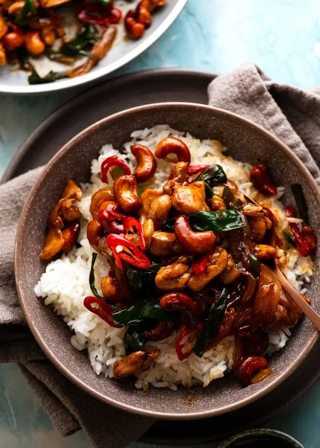

Thai Cashew Chicken

Description
A wonderfully spicy Thai dish. I created this when I fell in love with a dish at a Thai restaurant. It is very good served over jasmine rice. Fish sauce can be found in any Asian market, or the Asian section of the supermarket.
Ingredients
- ¼ cup soy sauce
- ¼ cup fish sauce
- 1½ tablespoons hot pepper sauce
- 3 cloves garlic, minced
- 1 tablespoon minced fresh ginger root
- 4 skinless, boneless chicken breast halves - cut into thin strips
- 1 cup dry jasmine rice
- 2 cups water
- 1 tablespoon sesame oil
- 3 tablespoons brown sugar
- 1 small onion, quartered then sliced
- ¾ cup water
- 3 tablespoons creamy peanut butter
- 1 cup unsalted cashew nuts
Steps
- In a resealable plastic bag, mix the soy sauce, fish sauce, hot pepper sauce, garlic, and ginger. Place the chicken in the bag, seal, and marinate at least 2 hours in the refrigerator.
- In a medium saucepan, bring the jasmine rice and 2 cups water to a boil. Reduce heat, cover, and simmer 20 minutes.
- Heat the sesame oil in a large skillet over medium heat. Stir in the brown sugar until dissolved. Stir in the onion, and cook about 5 minutes, until tender. Reserving the marinade mixture, place the chicken into the skillet, and cook about 10 minutes, until browned.
- Stir the reserved marinade and 3/4 cup water into the skillet, and bring to a boil. Continue to cook and stir 10 minutes, or until the chicken is no longer pink and juices run clear. Thoroughly blend in the peanut butter. Serve over the jasmine rice with a sprinkling of cashews.